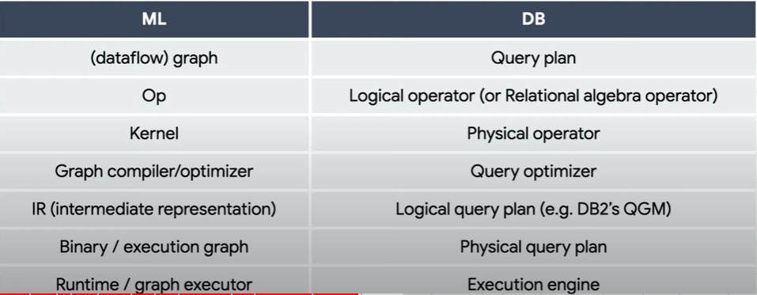

Huasong Shan
Staff Scientist
JD.com American Technologies Corporation
Mountain View, CA, USA
E-Mail:
monadynshy AT gmail DOT com
[
Home
]
[
Research
]
[
Publications
]
[
Service
]
[
Links
]
[
Bio]
My Profiles
My Patents (Google)
My Computer Science Bibliographies (DBLP)
My Computer Science Authors Profile
My Google Scholoar
My Microsoft Academic Profile
AI
SCI-HUB
PapersWithCode
A Guide to Python Machine Learning and Data Science Frameworks
ICML 2018 Tutorial: Toward theoretical understanding of deep learning by Sanjeev Arora
Cloud Computing
Generating Complex, Realistic Cloud Workloads using Recurrent Neural Networks
(SOSP ’21-Huawei-simulating workloads)
Thunderbolt: Throughput-Optimized, Quality-of-Service-Aware Power Capping at Scale (OSDI ’20-Google-hardware-agnostic power capping system)
Shard Manager: A Generic Shard Management Framework for Geo-distributed Applications (SOSP ’21-FB-Shard management)
Twine: A Unified Cluster Management System for Shared Infrastructure (OSDI ’20-FB-Container management)
RAS: Continuously Optimized Region-Wide Datacenter Resource Allocation (SOSP ’21-FB-Resource allocation-HW Capacity reservation)
Apollo: Scalable and Coordinated Scheduling for Cloud-Scale Computing (OSDI ’14-Microsoft-big data jobs)
Distributed System
"The Eight Fallacies of Distributed Computing"
by
Stephen Asbury
The Anatomy of a Distributed System
by
QCon'17
"google research distributed-systems-and-parallel-computing"
...
Distributed Systems (UW)
by
Arvind Krishnamurthy
ZooKeeper: Wait-free coordination for Internet-scale systems (ATC ’10)
The Chubby lock service for loosely-coupled distributed systems (OSDI ’06-Google)
Paxos
by
martinfowler
Raft
Demo
Virtual consensus in Delos
(FB, OSDI’2020)
AIOps
Designing and Operating Highly Available Software Systems at Scale
SRE Best Practices for Capacity Management
"google research software-systems"
...
Proactive network operations: Network Intelligence Center
...
Data Infra
Scaling Write-Intensive Key-Value Stores
(Monkey, Dostoevsky, Wacky)
...
Monkey
(SIGMOD ’17 Harvard)
SlimDB: A Space-Efficient Key-Value Storage Engine For Semi-Sorted Data
(VLDB ’17 CMU)
Summarized learning notes: DDIA
"google research data-management"
...
Cache made consistent: Meta’s cache invalidation solution
TAO: Facebook’s Distributed Data Store for the Social Graph (ATC ’13)
Scaling Memcache at Facebook (NSDI ’13)
FlightTracker: Consistency across Read-Optimized Online Stores at Facebook (OSDI ’20-FB-TAO)
Read-your-write Consistency
The Distributed Database Behind Twitter: MySQL->Cassandra->Manhattan
Hive: A Petabyte Scale Data Warehouse Using Hadoop
The Snowflake Elastic Data Warehouse
Napa: Powering Scalable Data Warehousing with Robust Query Performance at Google
Napa: Powering Scalable Data Warehousing with Robust Query Performance at Google (VLDB ’21)
Presto: SQL on Everything
Lakehouse: A New Generation of Open Platforms that Unify Data Warehousing and Advanced Analytics
Delta Lake: High-Performance ACID Table Storage over Cloud Object Stores
Dremel: Interactive Analysis of Web-Scale Datasets
Amazon Redshi! Re-invented
Storage
LSM Tree
Dissecting, Designing, and Optimizing LSM-based Data Stores (Tutorial at SIGMOD 2022)
GFS
->
Colossus
Haystack (Haystack -> Warm Storage -> Tectonic -> )
f4: Facebook’s Warm BLOB Storage System
HDFS: The Hadoop Distributed File System
Facebook's Tectonic Filesystem: Efficiency from Exascale
Pelican: A Building Block for Exascale Cold Data Storage
CRUSH: Controlled, Scalable, Decentralized Placement of Replicated Data
RADOS: a scalable, reliable storage service for petabyte-scale storage
Megastore: Providing Scalable, Highly Available Storage for Interactive Services
The Design and Implementation of a Log-Structured File System
The RAMCloud Storage System
ML Infra

Inside TensorFlow: Building ML infra
...
Security
Computer Security Conference Ranking and Statistic by Guofei Gu
Top Cyber Security Conferences Ranking by Jianying Zhou
Networking Conferences Statistics by Kevin C. Almeroth